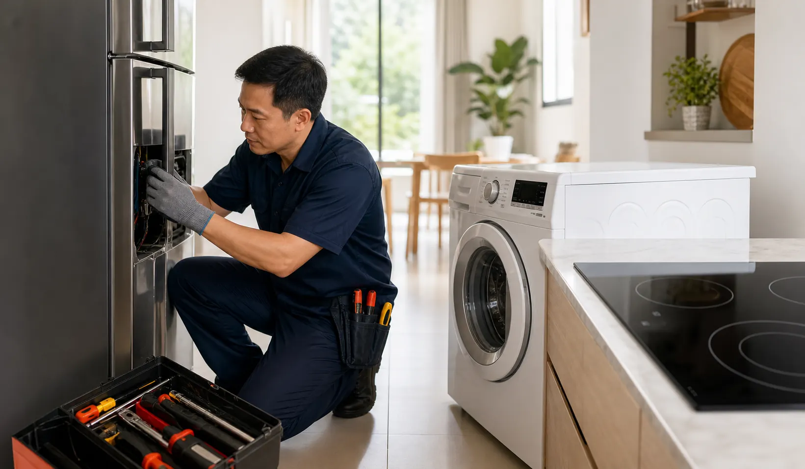

tủ lạnh đóng tuyết là tình trạng nhiều gia đình tại TP.HCM gặp phải trong quá trình sử dụng thiết bị hằng ngày. Lỗi này không chỉ gây bất tiện mà còn có thể làm tăng điện năng tiêu thụ, ảnh hưởng thực phẩm, quần áo hoặc an toàn nấu nướng tùy loại thiết bị. Điều quan trọng là không nên vội kết luận hỏng nặng khi chưa kiểm tra đầy đủ các dấu hiệu ban đầu.
Bài viết này tổng hợp cách nhận biết triệu chứng, nguyên nhân thường gặp, những bước có thể tự kiểm tra an toàn và thời điểm nên gọi kỹ thuật viên. Nội dung được viết theo hướng thực tế: giúp bạn mô tả lỗi rõ hơn khi liên hệ, hiểu vì sao cần kiểm tra tận nơi và tránh các quyết định sửa chữa thiếu thông tin.
Triệu chứng thường gặp
Dấu hiệu dễ nhận thấy nhất là lớp tuyết dày ở ngăn đá, gió lạnh yếu, quạt cạ tuyết hoặc tủ kêu bất thường. Với nhiều thiết bị, lỗi ban đầu có thể xuất hiện không liên tục: hôm nay hoạt động bình thường, hôm sau lại yếu hoặc báo lỗi. Chính sự chập chờn này khiến người dùng dễ bỏ qua cho đến khi thiết bị dừng hẳn.
Bạn nên ghi lại thời điểm lỗi xuất hiện, âm thanh bất thường, mã lỗi trên màn hình, mùi khét, tình trạng nước hoặc nhiệt độ. Những thông tin này giúp kỹ thuật viên khoanh vùng nguyên nhân nhanh hơn khi đến kiểm tra.
- Lỗi xuất hiện ngay khi bật máy hay sau một thời gian vận hành.
- Thiết bị có báo mã lỗi, nhấp nháy đèn hoặc phát tiếng bíp không.
- Có dấu hiệu rò nước, nóng bất thường, rung mạnh hoặc mùi khét không.
- Lỗi có xảy ra sau khi di chuyển, vệ sinh, mất điện hoặc quá tải không.
Nguyên nhân có thể xảy ra
Nguyên nhân của tủ lạnh đóng tuyết thường không chỉ nằm ở một linh kiện duy nhất. Một triệu chứng giống nhau có thể đến từ nguồn điện, cảm biến, motor, quạt, đường nước, bo mạch hoặc cách sử dụng. Vì vậy việc báo giá chính xác qua điện thoại thường không đủ cơ sở nếu chưa kiểm tra trực tiếp.
Với thiết bị điện lạnh và điện gia dụng, môi trường lắp đặt cũng ảnh hưởng nhiều. Nơi quá nóng, ẩm, thiếu thông thoáng, nguồn điện yếu hoặc thói quen sử dụng quá tải đều có thể làm lỗi lặp lại. Kiểm tra thực tế giúp phân biệt lỗi do vận hành với lỗi do linh kiện hỏng.
Cách kiểm tra an toàn tại nhà
Trước khi gọi thợ, bạn có thể kiểm tra các yếu tố cơ bản: nguồn điện có ổn định không, phích cắm có lỏng không, thiết bị có đặt cân bằng không, cửa hoặc nắp có đóng kín không, đường nước hoặc khe thoáng có bị che kín không. Đây là các bước an toàn, không cần tháo máy.
Không nên tự tháo bo mạch, đấu tắt cảm biến, chạm vào tụ điện hoặc thử nhiều lần khi thiết bị có mùi khét, chập điện, rò nước gần nguồn điện. Những thao tác này có thể làm lỗi nặng hơn và gây mất an toàn cho người sử dụng.
Hướng xử lý phù hợp
Nếu lỗi đến từ cách đặt máy, tải sử dụng hoặc vệ sinh khu vực ngoài, kỹ thuật viên có thể hướng dẫn điều chỉnh ngay. Nếu lỗi liên quan linh kiện, cần đo kiểm và xác nhận tình trạng trước khi thay thế. Việc thay linh kiện chỉ nên thực hiện khi đã có nguyên nhân rõ ràng và khách hàng đồng ý chi phí.
Trong nhiều trường hợp, xử lý đúng nguyên nhân giúp thiết bị vận hành ổn định hơn so với chỉ xử lý biểu hiện bên ngoài. Ví dụ một lỗi tiếng ồn có thể xuất phát từ vị trí đặt máy, nhưng cũng có thể đến từ quạt, bạc đạn, motor hoặc block. Mỗi nguyên nhân có phương án và chi phí khác nhau.
Lưu ý trước khi đặt lịch sửa
Trước khi đặt lịch, bạn nên chuẩn bị vài thông tin cơ bản để buổi kiểm tra diễn ra nhanh và chính xác hơn. Hãy ghi lại thời điểm lỗi bắt đầu, tần suất xuất hiện, tình trạng thiết bị trước đó và các thao tác gần nhất như vệ sinh, di chuyển, thay ổ cắm, đổi vị trí đặt máy hoặc sử dụng quá tải. Những chi tiết nhỏ này thường giúp phân biệt lỗi do điều kiện sử dụng với lỗi do linh kiện.
Nếu thiết bị còn hoạt động nhưng có dấu hiệu bất thường, không nên cố dùng liên tục trong thời gian dài. Việc tiếp tục vận hành khi máy đã yếu, nóng bất thường, rung mạnh hoặc báo lỗi lặp lại có thể khiến phạm vi hư hỏng lan rộng hơn. Với các lỗi liên quan điện, nước hoặc nhiệt, ưu tiên đầu tiên luôn là ngắt nguồn và giữ khu vực xung quanh khô ráo, thông thoáng.
Khi kỹ thuật viên đến kiểm tra, bạn nên yêu cầu giải thích rõ nguyên nhân, hạng mục cần xử lý, linh kiện dự kiến thay nếu có và thời gian bảo hành áp dụng. Một quy trình minh bạch sẽ giúp bạn chủ động quyết định sửa hay chưa sửa, đồng thời tránh hiểu nhầm về chi phí sau khi hoàn tất công việc.
Khi nào nên gọi kỹ thuật viên?
Bạn nên gọi kỹ thuật viên khi tủ lạnh đóng tuyết kéo dài, lặp lại sau khi đã kiểm tra cơ bản, hoặc đi kèm dấu hiệu bất thường như mùi khét, chập điện, rung mạnh, rò nước, nóng quá mức hay báo lỗi liên tục. Với các lỗi liên quan nguồn điện và bo mạch, ngưng sử dụng là lựa chọn an toàn hơn.
Khi liên hệ, hãy cung cấp loại thiết bị, thương hiệu nếu nhớ, mô tả lỗi, khu vực tại TP.HCM và thời gian mong muốn. Dịch vụ sẽ kiểm tra thực tế, báo nguyên nhân và báo giá trước khi sửa. Khách hàng chỉ quyết định sau khi đã nắm rõ phương án xử lý.
Câu hỏi thường gặp
Bạn chỉ nên kiểm tra các bước an toàn như nguồn điện, vị trí đặt máy và dấu hiệu bên ngoài. Các lỗi liên quan mạch điện, motor, block hoặc linh kiện bên trong nên để kỹ thuật viên kiểm tra.
Chi phí phụ thuộc nguyên nhân thực tế, tình trạng thiết bị và linh kiện cần xử lý. Kỹ thuật viên sẽ kiểm tra tại nhà ở TP.HCM và báo giá trước khi sửa.
Nên gọi kỹ thuật viên khi lỗi lặp lại, thiết bị có mùi khét, rò nước, chập điện, báo lỗi liên tục hoặc bạn đã kiểm tra cơ bản nhưng máy vẫn không hoạt động ổn định.
Có. Khách hàng được giải thích nguyên nhân, phương án xử lý và chi phí dự kiến trước. Chỉ sửa khi khách hàng đồng ý.
Có. Dịch vụ nhận kiểm tra tại nhà trong khu vực TP.HCM, lịch hẹn được sắp xếp theo địa chỉ và thời gian khách cung cấp.
Có bảo hành theo hạng mục sửa chữa hoặc linh kiện thay thế. Thời gian và điều kiện bảo hành được thông báo trước khi thực hiện.
Dịch vụ liên quan
Nếu thiết bị cần kiểm tra chuyên sâu, bạn có thể tham khảo các trang dịch vụ chính bên dưới. Các trang này có quy trình, lỗi thường gặp và bảng giá tham khảo theo từng nhóm thiết bị.
Bài viết liên quan
Cần kiểm tra tủ lạnh đóng tuyết tại TP.HCM?
Gọi hotline hoặc nhắn Zalo để gửi tình trạng thiết bị. Kỹ thuật viên sẽ tư vấn bước kiểm tra ban đầu và báo lịch phù hợp.